AI-assisted investigations
A SAR narrative where every sentence shows its evidence.
Claude drafts the narrative from the case file. A rule-based evaluator checks every amount, date and citation against that file. An investigator then accepts, edits or rejects the draft, and every disagreement with the evaluator is logged.
This page never calls a model. Drafts are generated offline and committed, so nothing here can spend API credits.

Draft workspace
Pick a case and check the draft line by line
Select a citation to see the evidence behind it. Select an alert to see every sentence that relies on it. Sentences the evaluator flagged are marked in red.
Evidence packet
Evaluator checks
Your review
Reviews are saved only in this browser. Download the log to commit it to the repo, where the same evaluator scores any edits.
Evaluation harness
What the rules found across every draft
Each check is plain code, so the same draft always gets the same result. Hard checks fail a draft. Warnings send it to a person with a reason.
Per check
Drafts that came through clean
| Check | Type | Clean drafts | Issues |
|---|
Testing the tester
Errors planted on purpose
Each real draft is copied and broken in one known way, then scored again. A fault counts as caught only if the check built for it fires.
| Planted error | Planted | Caught |
|---|
What rules cannot judge: whether the why section is persuasive, whether the right facts were chosen, and tone. That is what the human review step is for.
Human review
Where the reviewer and the evaluator disagree
A disagreement is the most useful signal in the lab. A draft the rules passed but a reviewer rejected shows what the rules cannot see. A draft the rules failed but a reviewer accepted shows a rule that is too strict.
Committed log
Reviewed drafts
| Case | Decision | Reason | Evaluator | Outcome |
|---|
This browser
Your reviews
Import a downloaded log with python3 src/review.py import file.json, then rebuild.
How it works
Built so the key never leaves the laptop
Generation runs once, locally, with the API key in an environment variable. Only the drafts and their scores are committed. This page is static files.
- Evidence packet24 fictional cases from the AML Backlog Command Center. Every fact gets an ID: KYC, CASE, or the alert ID.
- Draft with ClaudeStructured output forces who, what, when, where and why, with a citations list on every sentence.
- Check with rulesAmounts, dates, alert counts, branches, ZIPs and accounts must appear in the evidence the sentence cites.
- Plant errorsEight kinds of mistake are injected into copies of each draft to prove the checks fire.
- ReviewAccept, edit or reject with a reason. Edits are scored again by the same rules.
- PublishStatic page on GitHub Pages with a policy that blocks outside connections.